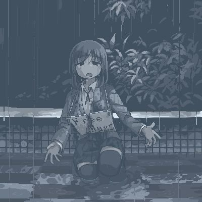

☯️🧬霊狐製作所 公式ツイッター🏳️⚧️
@Cheese_Ghostfox
@tapeIXUS1979 感觉是拍摄得过于表演和夸张了喵，加上AV剧组一般不会有啥打光，以麻豆为例，好多都是四面大白墙顶着个直光大灯，要么人往死里黑要么环境亮瞎眼

Tape.
@tapeIXUS1979
因为中国团队喜欢大光定，而大光定自动跟焦是会跑的，但小团队没办法找一个焦点员，这样会出现让人没有临场感且画面“呼吸感”重的情况
而日本多用深焦微广角，增加临场感的同时减少跟焦的不确定性🤓👆 https://t.co/yomE1UN4K2